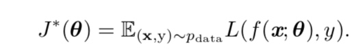

8.1 优化与学习
本章主要关注这一类特定的优化问题:寻找神经网络上的一组参数 θ，它能显 著地降低代价函数 J(θ)，该代价函数通常包括整个训练集上的性能评估和额外的正 则化项。
通常来说极其学习的算法目标大概可以写成，降低期望泛化误差。即风险

其中p_data是真实的分布，实际中我们只能最小化经验风险

8.2神经网络优化中的挑战
- 病态： hessain矩阵病态
- 局部最小值：对于非凸函数可能存在多个局部最小值。
- 。。。
8.3基本算法
梯度下降机器变种一般是机器学习中应用较多的优化算法。
(1)随机梯度下降SGD

（2）动量
动量是比SGD速度更快的一种方法，SGD相当于只是考虑梯度的方向，而动量是在此基础上加上速度。